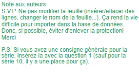

|
Saison #24 - Première série de Questionnaires |
| Numéro de Questionnaire |
2 |
| Date de création : |
|
| Auteur(s) : |
|
| Équipe de(s) l’auteur(s) : |
Herbizarres |
| Date des parties : |
29-30 octobre 2025 |
| Partie 1 |
Génies de la traduction vs Faciles à cuire |
| Partie 2 |
12e meilleurs vs Bons Perdants |
|
|
Série 1 |
Langue |
|
Individuelle |
Mots à syllabes répétées |
|
Rédiger 8 questions de niveaux faciles et constants. |
|
| Équipe A |
| 1 |
Synonyme de routine, occupations monotones habituelles. |
Train-train |
| 2 |
Discours vide, flot de paroles creuses, inutiles ou mensongères. |
Bla-bla ou bla-bla-bla |
| 3 |
Femme qui a pour travail la garde d’enfants. |
Nounou |
| 4 |
Jeu d’enfants ou l’un d’eux doit trouver ses amis dissimulés dans un territoire donné. |
Cache-cache |
| Équipe B |
| 5 |
Grand-père en langage familier ou enfantin. |
Pépé |
| 6 |
Ce qu’on dit en levant nos verres. |
Tchin tchin |
| 7 |
Semoule de blé populaire en Afrique du Nord. |
Couscous |
| 8 |
Oiseau d’Eurasie qui pond dans le nid des autres espèces d’oiseau, on utilise aussi ce terme pour se saluer de façon familière. |
Coucou |
|
|
Série 2 |
Géographie |
|
Collective |
|
|
Les 5 questions doivent couvrir l'ensemble du thème. Varier les sujets, formulations, longueurs, difficultés, etc. |
|
| 1 |
Comment appelle-t-on un type de carte qui représente à la fois le relief, les éléments naturels et les aménagements humains en utilisant une échelle moyenne à grande ? |
Carte topographique |
| 2 |
Du nom d'un état américain, quel est le nom du courant froid qui longe la côte sud-ouest des États-Unis vers le nord-ouest du Mexique ? |
Courant de Californie |
| 3 |
Quelle est l'attraction principale du site inscrit au patrimoine mondial de l'Unesco de Kinderdjik aux Pays-Bas, qui a permis de maintenir au sec les habitants de cette région pendant près de 1000 ans ? |
Réseau de moulins |
| 4 |
Nommez 2 des 3 villes de Colombie comptant plus d'un million d'habitants ? |
Bogota, Medellin, Cali |
| 5 |
Dans quel pays le mont Kosciuszko est-il le point culminant ? |
Australie |
|
|
Série 3 |
Cinéma et télévision |
|
Collective |
|
|
Les 5 questions doivent couvrir l'ensemble des thèmes. Varier les sujets, formulations, longueurs, difficultés, etc. |
|
| 1 |
Quelle série présentement en onde à TVA raconte l'histoire de Marc à la recherche de son frère Gabriel qu'il croit avoir été enlevé par les extraterrestres? |
Société distincte |
| 2 |
Qui interprète Bruce Springsteen dans le film Springstween Deliver Me from Nowhere? |
Jeremy Allen White |
| 3 |
Combien y a-t-il d'itération des films d'horreur Halloween? |
13 |
| 4 |
Qui produit les séries Doute raisonnable, Dumas, L'Appel, Antigang et STAT? |
Fabienne Larouche |
| 5 |
Quelle actrice décédée le 11 octobre 2025 est connue pour ses rôles dans Annie Hall, Le Parrain et Le père de la mariée? |
Diane Keaton |
|
|
|
|
Série 4 |
Histoire et société |
|
Collective |
|
|
Au moins 2 questions dans chacun des thèmes. |
|
| 1 |
Quel événement majeur s'est déroulé au Québec le 30 octobre 1995? |
Deuxième référendum sur la souverainneté du Québec |
| 2 |
De quel pays Mette Frederiksen est-elle la première ministre? |
Danemark |
| 3 |
Quel polémiste et militant américain a été assassiné le 10 septembre dernier à Orem en Utah? |
Charlie Kirk |
| 4 |
Quelle fête catholique est célébrée le 1er novembre? |
Toussaint |
| 5 |
À quel Allemand doit-on l'invention de la presse à imprimer? |
Johann Gutenberg |
|
|
|
|
Série 5 |
Une année, décennie ou siècle |
|
Contrôle |
1995 |
|
Choisir une année (décennie ou siècle pour les époques plus anciennes) et poser 5 questions relatives à cette période. Les questions doivent être diversifiées, sports, politiques, arts, etc. La première question vaut 5 points. |
|
| 1 |
De quel ancien joueur de football de la NFL s'ouvre le procès pour meurtre de son ex-épouse le 24 janvier? |
O. J. Simpson |
| 2 |
Quelle organisation internationnale est née le 1er janvier? |
Organisation mondiale du commerce (OMC) |
| 3 |
Comment s'appelle la première planète extrasolaire découverte le 6 octobre? |
51 Pegasi b ou Dimidium |
| 4 |
Quel est le nom des accords signés le 14 décembre qui mettaient fin à la guerre en Bosnie-Herzégovine? |
Accords de Dayton |
| 5 |
Quel crooner et acteur américain est décédé le 25 décembre? |
Dean Martin |
|
|
Série 6 |
Musique |
|
Les 4 V |
Groupes québécois |
|
Une bonne réponse élimine le joueur pour la série. Si tous les joueurs d'une équipe ont une bonne réponse, la série se poursuit en collectives pour 5 points. |
|
|
|
|
| 1 |
Qui a chanté Tous les parmiers, La complainte du phoque en Alaska et Harmonie du soir à Châteauguay? |
Beau Dommage |
| 2 |
Ils sont connus pour Saskatchewan, Corinne et Tout nu sur la plage? |
Les Trois Accords |
| 3 |
Quel groupe est connu pour ces succès Câline de Blues, Chu un Rocker et La Voix que J'ai? |
Offenbach |
| 4 |
Qui chantait Un musicien parmi tant d'autres, Pour un instant et Dixie? |
Harmonium |
| 5 |
Ils ont chanté T'es dans la lune, Fais attention et Donne-moi ma chance? |
Les BB |
| 6 |
Qui a chanté Toune d'automne, L'Amérique pleure et Les étoiles filantes? |
Les Cowboys Fringants |
| 7 |
Ils chantent Coton ouaté, J'ai mangé trop de patates frites et Molle Twist Vanille-Vanille? |
Bleu Jeans Bleu |
| 8 |
Quel groupe est connu pour Julie, La rue principale et Tassez-vous de d'là? |
Les Colocs |
|
|
Série 7 |
Arts et littérature |
|
Collective |
|
|
Au moins 2 questions dans chacun des thèmes. |
|
| 1 |
Qui a remporté le prix Nobel de littérature 2025? |
Laszlo Krasznahorkai |
| 2 |
À quel mouvement artistique est associé Claude Monet? |
Impressionisme |
| 3 |
Quel auteur américain est connue pour ses nouvelles macabres et mystérieuses telles que Le chat noir, Le corbeau et La chute de la maison Usher? |
Edgar Allan Poe |
| 4 |
Quel artiste du Pop Art a peint des boîtes de soupe Cambell? |
Andy Warhol |
| 5 |
Quel auteur québécois a écrit Que notre joie demeure, Querelle de Roberval et Les sentiers de neige? |
Kev Lambert |
|
|
Série 8 |
Sports et loisirs |
|
Collective |
|
|
Au moins 2 questions dans chacun des thèmes. |
|
| 1 |
Dans quelle ville évolue le club-école des Sénateurs d’Ottawa? |
Belleville |
| 2 |
Quel est le nom du robot qui est la vedette de jeux lancés sur les produits Playstation dont le jeu qui porte son nom lancé en 2024 a remporté le titre de jeu de l’année par The Game Awards? |
Astro Bot |
| 3 |
Quel cycliste canadien a remporté le Giro en 2012? |
Ryder Hesjedal |
| 4 |
Combien de cartes un joueur de Magic: The Gathering prend-il dans sa main au début de la partie? |
7 |
| 5 |
Quelles sont les quatre courses parcourues lors d’un décathlon? |
100 m, 400 m, 110 m haies, 1 500 m |
|
|
Série 9 |
|
|
Question à indice |
Divers |
|
Dès le 1er indice, il ne doit pas y avoir plusieurs réponses possibles. Le premier indice devrait être très difficile! |
|
| 1 |
Nom d’artiste du chanteur Fabio Frittelli dont son plus grand succès aura été Eins, Zwei, Polizei. |
|
| 2 |
Équipe de hockey située à Örnsköldsvik en Suède qui a entre autres formé Peter Forsberg avant son arrivée dans la LNH. |
|
| 3 |
Mot utilisé après « grosso » pour dire « en gros ». |
Modo (Mo-Do) |
|
|
Série 10 |
Acutalité |
|
Vis-à-vis |
Année 2024 |
|
Il est normal que ces 4 questions soient parmi les plus faciles du questionnaire |
|
| 1 |
Quel dirigeant syrien a fui vers la Russie le 8 décembre dernier, mettant fin à son régime meurtrier ? |
Bachar Al-Assad |
| 2 |
Quel pays a élu Claudia Sheinbaum, première femme présidente de son pays le 1er octobre ? |
Mexique |
| 3 |
Qui était l'opposante de Donald Trump aux élections présidentielles du 5 novembre ? |
Kamala Harris |
| 4 |
Quel groupe Israël tente de chasser du pouvoir dans la bande de Gaza ? |
Hamas |
|
|
Série 11 |
Musique |
|
Collective |
|
|
Les 5 questions doivent couvrir l'ensemble du thème. Varier les sujets, formulations, longueurs, difficultés, etc. |
|
| |
Quelle salle de spectacle inaugurée en 2011 devient la 6ième salle de spectacle de la Place des Arts de Montréal ? |
La Maison symphonique |
| 2 |
Quel intervalle y a-t-il entre chaque corde de violon ou de violoncelle ? |
Quinte |
| 3 |
Quelle chanteuse née en 1988 est la fierté de la Barbade, son lieu de naissance ? |
Rihanna |
| 4 |
Comment se nomme la partie mobile d’un trombone ? |
Coulisse |
| 5 |
Quel type de pièce musicale est jouée le soir par un prétendant sous la fenêtre de la personne à séduire ? |
Sérénade |
|
|
Série 12 |
Sciences |
|
Collective |
|
|
Les 5 questions doivent couvrir l'ensemble du thème. Varier les sujets, formulations, longueurs, difficultés, etc. |
|
| 1 |
Quelle est la formule chimique de l’acide sulfurique? |
H2SO4 |
| 2 |
Quelle entreprise, lancée par d’anciens employés d’OpenAI, a produit le chatbot Claude? |
Anthropic |
| 3 |
Quelle est la somme des angles intérieurs d’un hexagone? |
720° |
| 4 |
Quelle spécialité de la médecine étudie les maladies de l’anus et du rectum? |
Proctologie |
| 5 |
Quelle unité de mesure nommée d’après un physicien allemand est l’unité de fréquence du système international? |
Hertz |
|
|
Série 13 |
Libre |
|
Choix d'associations |
|
|
Deux séries d'associations de 4 éléments. L'inconnue correctement identifiée et bien associée vaut 20 points, les autres bonnes associations valent 10 points chacune. |
|
|
Sous-thème 1 (doit être précis et non relié au sous-thème 2) |
|
|
Gala de l'ADISQ |
|
|
Associez l'année ou les années avec la gagnante dans la catégorie interprète féminine de l'année. |
|
| 1 |
2018 |
B - Klô Pelgag |
| 2 |
2020, 2023, 2024 |
A- Alexandra Streliski |
| 3 |
2012, 2019 |
D - Inconnue - Coeur de Pirate |
| 4 |
2021, 2022 |
C- Roxane Bruneau |
| A |
Alexandra Streliski |
|
| B |
Klô Pelgag |
|
| C |
Roxane Bruneau |
|
| D |
??? |
|
|
Sous-thème 2 (doit être précis et non relié au sous-thème 1) |
|
|
Histoire de la Ligue de hockey junior majeure du Québec (avant que le M devienne "Maritimes"...) |
|
|
Associez l'équipe défunte avec sa ville. |
|
| 1 |
Prédateurs |
C- Granby |
| 2 |
Éperviers |
B- Sorel |
| 3 |
Alouettes |
D- Inconnu - St-Jérôme |
| 4 |
Rangers |
A- Drummondville |
| A |
Drummondville |
|
| B |
Sorel |
|
| C |
Granby |
|
| D |
??? |
|
|
|
|
|
Série 14 |
Divers |
|
Questions Éclair |
|
|
Viser des questions courtes couvrant un maximum de thèmes différents. |
|
| 1 |
Quelle fête adorée des enfants serait d'origine celtique et est célébrée le 31 octobre? |
Halloween |
| 2 |
Quelle équipe affront les Blue Jays de Toronto dans la série mondiale 2025? |
Dodgers de Los Angeles |
| 3 |
Quel est le surnom d'Elvis Presley? |
Le King |
| 4 |
Quelle partie de la Maison Blanche a été détruite pour faire place à une salle de bal? |
East Wing ou l'aile Est |
| 5 |
Quel est le nom de la circonscription nouvellement représentée par Pierre Poilievre? |
Battle River-Crowfoot |
| 6 |
Quel est le nom de l’album francophone le plus vendu dans le monde, qui a récemment fait le sujet d’un documentaire pour célébrer ses 30 ans ? |
D'eux |
| 7 |
Combien de dents de lait un enfant humain possède-t-il généralement? |
20 |
| 8 |
Qui était empereur romain lors du début du 1er millénaire? |
Auguste (Octave) |
| 9 |
À quel peintre autrichien doit-on Le Baiser? |
Gustav Klimt |
| 10 |
Nommez un des deux noms qu’ont pris les prix du domaine télévisuel remis sur les ondes de TVA entre 1986 et 2022? |
Artis ou MetroStar |
|
|
Série 15 |
Actualité |
|
Question prime |
|
|
Poser une question demandant une réponse simple, pour éviter les ambiguïtés. |
|
| 1 |
Dans quel pays se rend Astérix selon le titre de l’album publié en 2025? |
Lusitanie |
